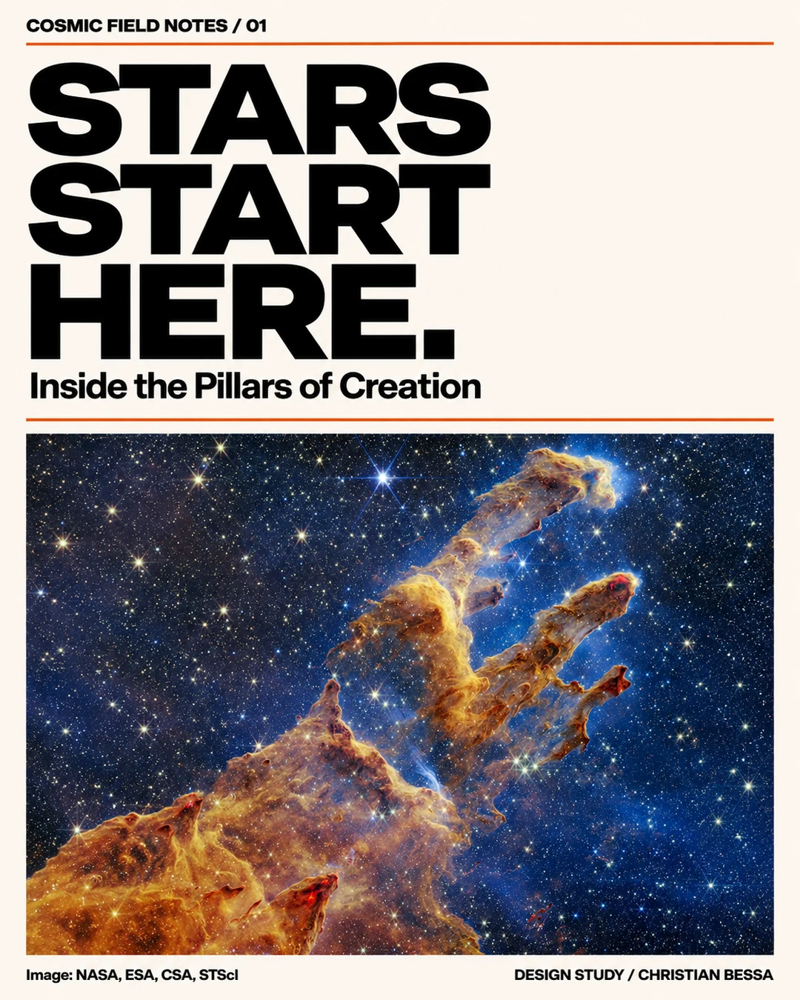
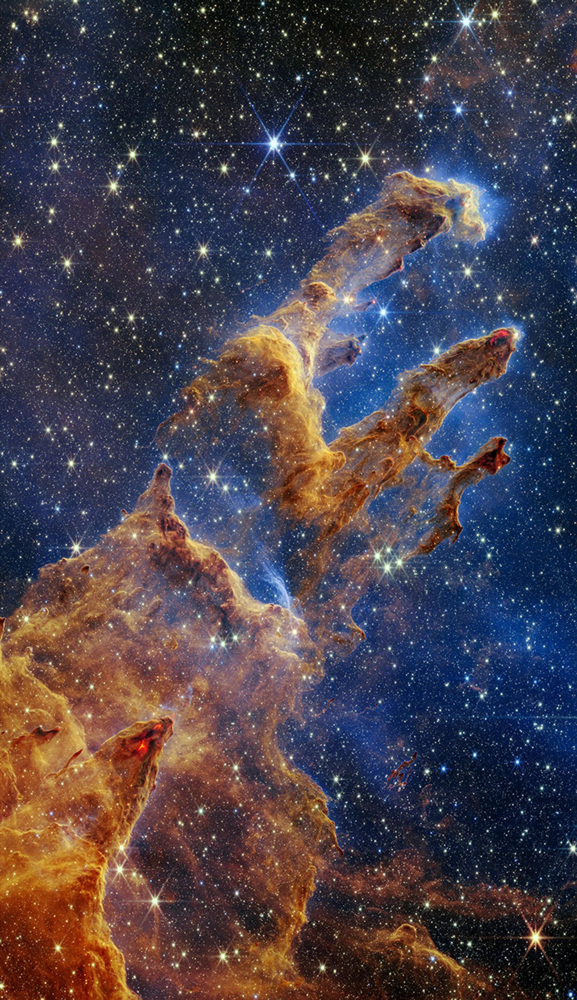
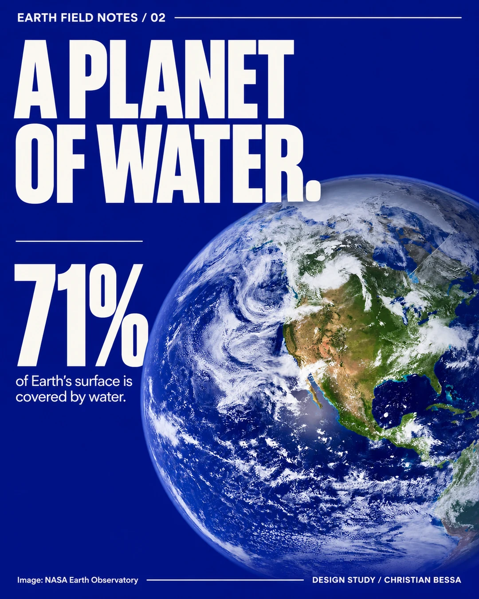
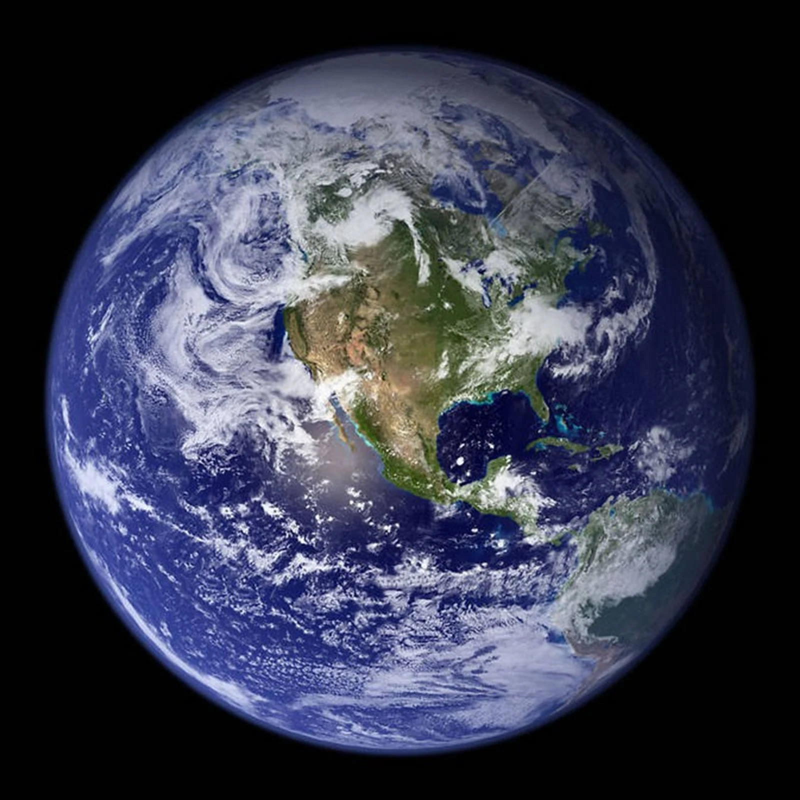
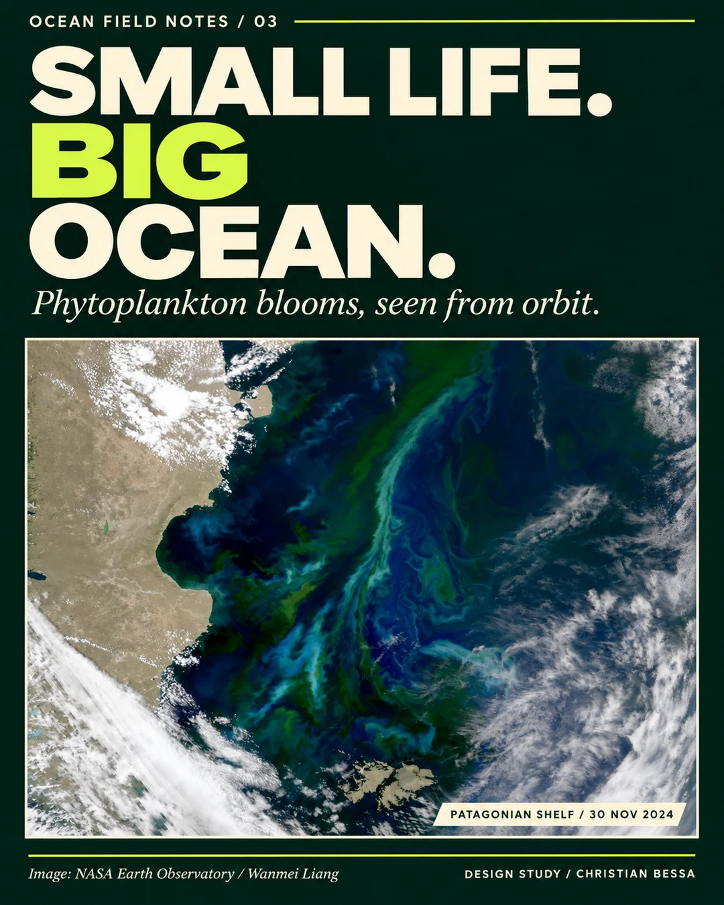
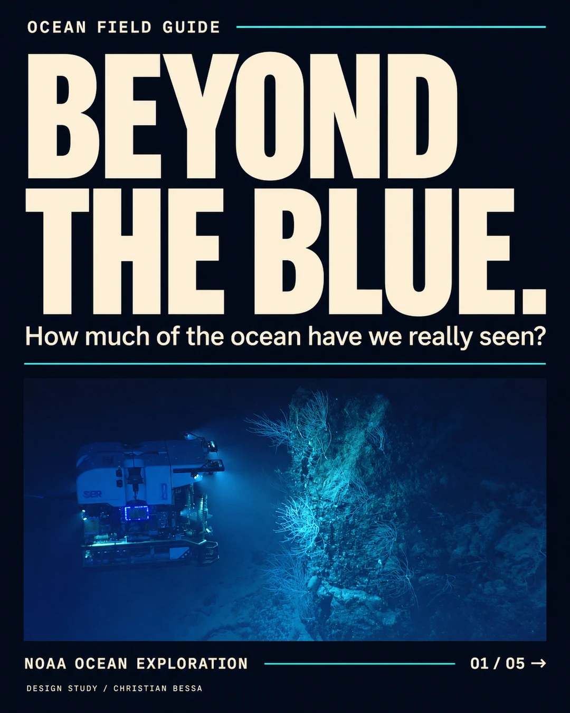

GRAPHIC DESIGN PORTFOLIO
Posts, carousels & thumbnails.
See portfolio







Hook → evidence → context → takeaway. One idea per slide, with a consistent visual rhythm.
01 / 08 — Digital choices
Personal concept study. Fictional model and hypothetical before/after.